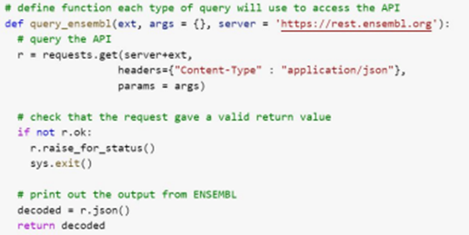
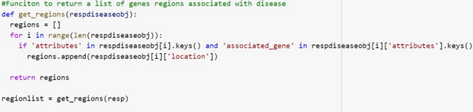
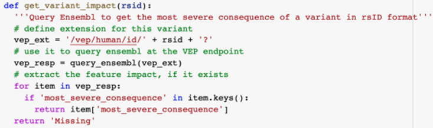
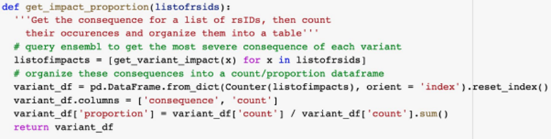
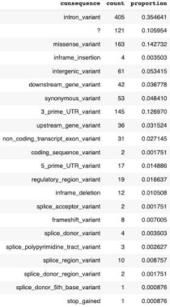

API-based method retrieves variant consequence proportions for human diseases
Explored by:
DARCI-MAHER, NICHOLAS WAXTER, RAZMA, CONNOR JOHN- (Bioinfo 201 - Winter 2022)
Description
Project overview
-
Assume we are given a disease of interest
-
Use the Ensembl phenotype annotation endpoint to extract genomic regions associated with the disease
- Use the Ensembl overlap endpoint to find variants in these regions 4. Use the Ensembl Variant Effect Predictor (VEP) endpoint to discover the consequences of each variant
- Calculate the proportions of each consequence for the disease
Function to access Ensembl Rest API features
● Input: Extension specifying application ● Output: Object associated with application ● In our case we will use this function to get a list of dictionaries with areas of the genome associated with alzheimer's

Function to find gene regions in our list of dictionaries
● Input: List of dictionaries of areas of genome associated with a disease ● Output: List of gene regions that are associated with a disease

Function to return all variants associated with regions
● Input: A list of regions associated with a disease ● Output: All variants associated with those regions

Use VEP to get variant consequence
● Input: a single variant ID (rsID) ● Output: The most severe consequence of that variant (e.g. missense, splice site, stop gained, etc.)

Calculate proportions of consequence in a variant list
● Input: a list of variant IDs ● Output: proportion of consequences for the disease associated with the list of variants

Results: Proportion of variant consequences in Alzheimer’s disease
● Ran our full pipeline on Alzheimer’s disease (EFO ID=0000249)
● Found that the most common
consequences in Alzheimer’s variants are:
1. Intron variant (35%)
2. Missense variant (14%)
3. 3’ UTR variant (13%)
